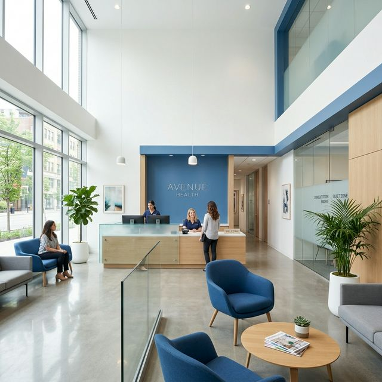

Choosing health above all is a smart investment in your future. When you prioritize your well-being more smoothly
Planos de saúde para todas as famílias
Especialistas com anos de prática clínica
Atendimento humano e personalizado
Agende a qualquer hora, de qualquer lugar

Desde 2010, a VitaClinic tem cuidado de milhares de famílias em Maputo com dedicação, rigor e carinho. Acreditamos que saúde é uma relação de confiança construída no dia a dia.
Cuidados completos para toda a família, com foco na qualidade e no conforto do paciente.
Avaliação completa do seu estado de saúde com médicos experientes. Check-ups regulares para toda a família.
Diagnóstico e tratamento de doenças cardiovasculares com equipamentos de última geração.
Análises clínicas precisas e rápidas. Resultados disponíveis online em menos de 24 horas.
Consultas por videochamada com a mesma qualidade do atendimento presencial. Praticidade total.
Cuidados especializados para os mais pequenos, num ambiente acolhedor e totalmente seguro.
Raio-X, ecografia e outros exames com tecnologia avançada e laudos detalhados.
Equipa multidisciplinar para cuidar de si em todas as fases da vida.
Em 4 passos, cuide da sua saúde sem complicações.
Registo rápido e gratuito. Menos de 2 minutos e já está pronto para marcar.
Selecione o médico e a especialidade que mais se adequa às suas necessidades.
Consultas presenciais ou por telemedicina — no dia e hora que for conveniente.
Venha à clínica ou aceda online. O cuidado que merece, como preferir.
A confiança de quem nos escolhe é o nosso maior orgulho.
"Atendimento fantástico! A equipa foi incrivelmente atenciosa e profissional. Recomendo a VitaClinic a toda a minha família."
"A marcação online tornou tudo mais fácil. Resultados rápidos e um ambiente muito acolhedor. Excelente clínica!"
"A telemedicina da VitaClinic é perfeita. Consegui consultar um especialista sem sair de casa. Serviço 5 estrelas!"
A VitaClinic está pronta para o receber. Equipa dedicada, instalações modernas e um atendimento que trata cada paciente como único.